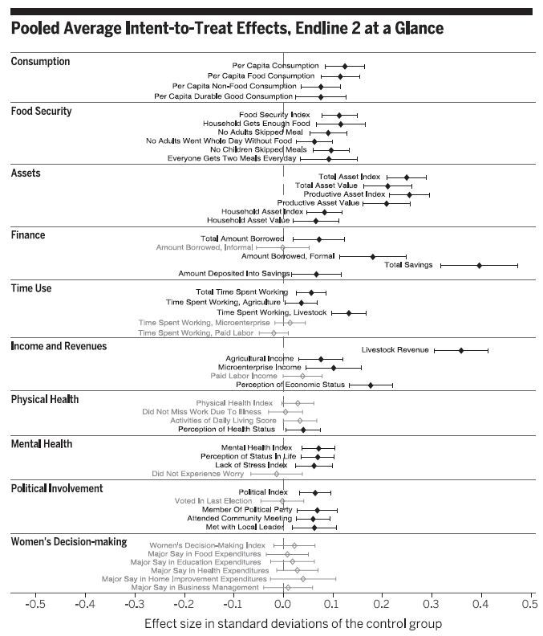

Ortogonalidad
|
|||
|---|---|---|---|
| (1) | (2) | (3) | |
| Consumo per cápita | Índice seguridad alimentaria | Índice activos | |
| Panel A: Prueba de diferencia de medias | |||
| Control | 0.0000 | 0.0000 | 0.0000 |
| (0.0124) | (0.0124) | (0.0124) | |
| Tratamiento | -0.0323 | -0.0033 | 0.0277 |
| (0.0140) | (0.0165) | (0.0188) | |
| Valor \(p\) | 0.0979 | 0.8735 | 0.2019 |
| Panel B: Regresión | |||
| Tratamiento | -0.0310 | 0.0050 | 0.0180 |
| (0.020) | (0.0210) | (0.0220) | |
| \(R^2\) | 0.0000 | 0.0000 | 0.0010 |
| Nota: Apéndice en Banerjee et al. (2015). | |||
Clase 7. Experimentos a escala masiva
Inferencia Causal
Irvin Rojas
rojasirvin.com
Centro de Investigación y Docencia Económicas División de Economía
Agenda
Estudiaremos una intervención en seis países para enfatizar las características de un experimento aleatorio y el análisis del mismo
Reconoceremos distintos elementos del diseño y de la econometría que se emplean en las evaluaciones experimentales
Experimentos a escala masiva
Un programa multifacético causa progresos duraderos para los pobres
Banerjee y una larga lista de coautores (2015)
Hasta ahora habíamos analizado intervenciones con tratamientos aleatorizados que se restringían a una región o país
Un fenómeno en el corazón del estudio de la economía del desarrollo es identificar las condiciones que provocan que las personas vivan en pobreza y, por tanto, identificar intervenciones que permitan mejorar el nivel de vida de la gente
¿Qué piensan? ¿Debemos hacer cosas para combatir la pobreza?
El programa
Intervención de gran escala en seis países: Etiopía, Ghana, Honduras, India, Pakistán y Perú
¿En qué consistió la intervención?
Programa holístico
- Activos
- Transferencias para comida
- Entrenamiento para negocios
- Acompañamiento (coaching)
- Productos de ahorro
- Educación para la salud
Diseño
- ¿Cómo se decidió quién recibiría el programa?
- En tres países hubo una aleatorización individual
- En cada una de las localidades participantes se eligieron aleatoriamente a los hogares participantes
- En otros tres, hubo una aletorización agrupada (clustered)
- De las localidades participantes, primero se asignaron localidades a tratamiento y localidades a control
- En las localidades de tratamiento, se aleatorizaron los hogares que recibieron el tratamiento
- Permite identificar la presencia de efectos de derramamiento o spillovers
Integridad del diseño
Aquí tenemos dos tablas del apéndice del artículo
¿A qué equivale la tabla de ortogonalidad en el lenguaje que hemos usado hasta ahora?
¿Qué nos dice el panel A? ¿Cuál es la \(H_0\)?
¿Qué nos dice el panel B? ¿A qué le ponemos atención aquí?
¿Qué se concluye?
Integridad del diseño
Integridad del diseño
¿Cómo interpretamos los resultados sobre atrición presentados?
¿Cuál es la \(H_0\) en cada panel?
Atrición
|
||
|---|---|---|
Variable dependiente: encuesta completada
|
||
| (1) | (2) | |
| Ronda 1 | Ronda 2 | |
| Panel A | ||
| Tratamiento | 0.0079 | 0.0095 |
| (0.0054) | (0.0060) | |
| Media | 0.940 | 0.91 |
| Panel B | ||
| Tratamiento | 0.0073 | 0.0090 |
| (0.0054) | (0.0060) | |
| Consumo per cápita | 0.0000 | 0.0000 |
| (0.0030) | (0.0030) | |
| Índice activos | 0.0068*** | 0.0080*** |
| (0.0023) | (0.0025) | |
| Índice salud mental | 0.0000 | -0.0065** |
| (0.0028) | (0.0032) | |
| Panel C | ||
| Tratamiento | 0.0087 | 0.0091 |
| (0.0069) | (0.0078) | |
| Características línea base | Sí | Sí |
| Características línea base x Tratamiento | Sí | Sí |
| Media atrición | 0.94 | 0.91 |
| Valor \(p\) | 0.75 | 0.17 |
| Nota: Apéndice en Banerjee et al. (2015). | ||
Integridad del diseño
¿A se refiere el término cumplimiento o compliance?
¿Qué significa que la tasa de cumplimiento en India sea de 52%?
- ¿Por qué se dice que el análisis presentado es uno de intención de tratamiento (intention to treat, ITT)
- Se comparan hogares asignados al tratamiento con hogares asignados al control, sin importar si efectivamente lo recibieron o no
Efectos de tratamiento
- Se estima una sola ecuación con todas las observaciones para cada variable de interés
\[Y^k_i=\alpha + \beta_1 T_i + \beta Z_i^k + P_i + S_i + E_i + \varepsilon_i\]
\(T_i\) es el indicador de asignación al tratamiento
\(Z_i\) es el valor de la variable de interés en la línea base
\(P_i\) son variables indicadoras por país
\(S_i\) son variables indicadoras de si la encuesta fue una encuesta corta
\(E_i\) son variables indicadores de estratificación
Variable dependiente
- ¿Cómo se construye \(Y^k_i\)?
Consideremos primero una sola variable, digamos el consumo per capita de comida
Esto es \(Y^{k}_{ijl}\) del hogar \(i\) en el país \(l\) y donde \(k=\text{consumo de alimentos}\)
La variable consumo de comida es parte de la familia de consumo \(j=consumo\)
Se construye un \(z\)-score para cada variable restándole la media del grupo de control en la ronda en donde se evalúa el impacto en el país \(l\) y se le divide por la desviación estándar
En seguida, para cada familia \(j\), tomamos los \(z\)-score de las variables que pertenecen a dicha familia y obtenemos la media y la desviación estándar para cada país \(l\) y ronda
Finalmente \(Y^k_i\) resulta de estandarizar cada \(Y^{k}_{ijl}\)
Efectos de tratamiento
¿Cuál es la evidencia (tabla o gráfica) más importante que resume los efectos del programa?
¿Qué se encuentra?

Efectos de derramamiento
¿Cómo podemos identificar los efectos de derramamiento en los países en donde hubo localidades enteras sin ningún hogar tratado?
En los casos de Ghana, Honduras y Perú hay tres tipos de hogares:
Tratados en localidades tratadas
No tratados en localidades tratadas
No tratado en localidades no tratadas (control)
- Podemos comparar a los no tratados en las localidades de tratamiento con los no tratados en las localidades de control
Próxima sesión
- Un laboratorio en R sobre regresión y métodos experimentales
- Será muy útil si le echan un ojo a la Tarea 1
- El jueves hablaré sobre cómo estimar el LATE usando variables instrumentales
- Angrist, J. D. (2006). Instrumental variables methods in experimental criminological research: what, why and how. Journal of Experimental Criminology, 2(1), 23-44.
Presentación creada usando el paquete xaringan en R.
El chakra viene de remark.js, knitr, y R Markdown.
Material de clase en versión preliminar.
No reproducir, no distribuir, no citar.